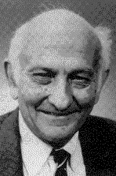

|  |
1987 год John Cocke (1925–2002) «За выдающийся вклад в проектирование и теорию компиляторов, архитектуру больших систем и разработку RISC-компьютеров; за обнаружение и систематизацию многих фундаментальных преобразований, используемых в настоящее время для оптимизации компиляторов, включая снижение силы оператора, устранение общих подвыражений, распределение регистров, распространение констант и удаление избыточного кода» |
Страна: США
Образование: Доктор философии в области математики, Университет Дюка, 1953
О лауреате
Cocke сделал большой вклад в архитектуру высокопроизводительных компьютеров и разработку оптимизированных компиляторов. Он начал в 1975 году, присоединившись к разработке экспериментального мини-компьютера IBM 801, который изначально был исследовательским проектом, а позднее стал коммерческим продуктом. Полученная архитектура не была похожа на распространённую тогда практику наличия множества сложных инструкций, встроенных в аппаратное обеспечение. Это казалось полезным для определённых случаев в программировании, но разработчикам компиляторов высокоуровневых языков было очень сложно их использовать при создании скомпилированного кода. Cocke решил разработать 801 с небольшим набором основных инструкция, оптимизированных для использования компиляторами, что привело к более простой и быстрой системе. Это оказало большое влияние на исследования компьютерной архитектуры, а позднее было названо «компьютером с сокращённым набором команд» (RISC). Критически важным для успеха RISC был оптимизирующий компилятор, способный эффективно использовать сокращенный набор команд. Cocke также участвовал в первых разработках алгоритмов по распознаванию речи и машинному переводу.
Ключевые слова: RISC, CYK algorithm
Краткая библиография
| 1. |
Cocke, John, “The search for performance in scientific processors: the Turing Award lecture,” Communications of the ACM, Vol. 31, Num. 3, March 1988, pp. 250-253 В этом докладе Cocke описывает три самых интересных проекта, в которых он участвовал в IBM. |
| 2. |
Cocke, J. and V. Markstein, “The evolution of RISC technology at IBM” IBM Journal of. Research and Development, Vol. 34, Num. 1, January 1990, pp. 4-11. В этой статье отслеживается эволюция архитектуры IBM RISC с 1970-х годов. |
| 3. |
Cocke, John and Jacob T. Schwartz, Programming Languages and their Compilers, Courant Institute of Mathematical Sciences, New York University, April 1970. Эта книга посвящена алгоритмам оптимизации. Cocke включил в неё многие из ныне знакомых методов, таких как устранение избыточного кода и снижение силы оператора. |